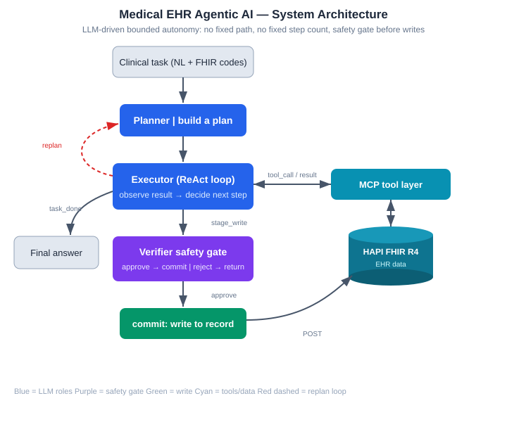
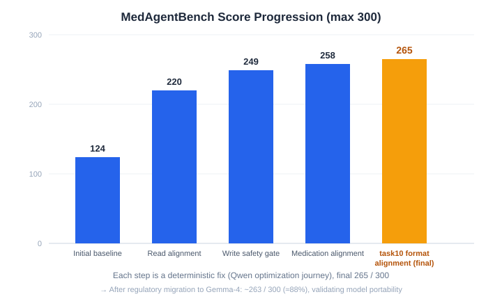
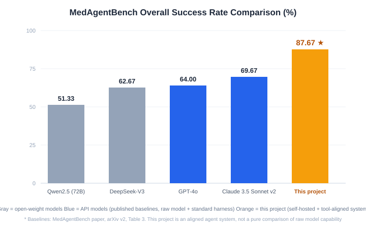

English ｜ 繁體中文
Medical EHR Agentic AI (MedAgent-EHR)
A Self-Hosted Clinical Agent That Plans, Acts and Checks Itself in a FHIR EHR
Unlike "one question, one answer" chat AI, this is an agentic AI: the LLM plans its own steps, decides which tool to call, performs clinical tasks in a standard FHIR EHR, and self-checks before writing to the medical record — fully self-hosted on a local GPU, with no cloud LLM API.
Design Concept
- Agentic, not chat: the LLM plans steps, chooses tools, executes clinical tasks and self-checks before any write.
- No fixed path, no fixed number of steps — the control flow is LLM-driven, not hard-coded.
- Fully self-hosted on a local GPU, with no dependency on any cloud LLM API.
Project Overview
- Task: query and write clinical tasks in a standard FHIR Electronic Health Record (EHR) environment — fetch the latest glucose, record blood pressure, place lab / referral orders, and more.
- Architecture: a Planner–Executor–Verifier three-role agent.
- Evaluation: Stanford's MedAgentBench (300 tasks, 10 clinical categories), scored with its official grader.
Architecture
- Planner: breaks the clinical task into ordered steps.
- Executor (ReAct loop): calls tools step by step, deciding the next move from each result.
- Verifier: a safety gate before any write to the record — every staged write is reviewed before commit is allowed.
- Tools connect to HAPI FHIR R4 via MCP; all reads and writes go through the standard FHIR API.


An actual web-demo run (record a blood pressure): a two-step Plan → find_patient locates the patient → stage_write passes Verifier review and writes to FHIR → the executor's attempt to call commit_write directly is blocked by the program-side gate (red block) → done. Both protection layers — the LLM Verifier and the program-side gate — are demonstrably active.
Tech Stack
| Category | Stack |
|---|---|
| LLM (self-hosted) | Gemma-4-26B-A4B-it (QAT Q4, Google) via llama.cpp on an RTX 4090; also validated on Qwen3.6-35B-A3B |
| Agent architecture | Planner / Executor (ReAct) / Verifier |
| Tools & data | MCP (fhir-mcp-server), HAPI FHIR R4 |
| Write safety | Two-phase stage → commit, Verifier gate, medical-code / dosage validation |
| Evaluation | MedAgentBench official refsol grader (300 tasks, 10 categories) |
| Deployment / tools | Flask (web demo), Docker, GGUF quantization, Python |
Key Results
- MedAgentBench official score: ~88% (259–263 / 300), above the best published baseline (Claude 3.5 Sonnet v2, 69.67%, MedAgentBench paper arXiv v2).
- Read tasks near full marks; after FHIR shape alignment, write tasks task3 / task8 reach 30/30.
- Model portability: for Taiwan regulatory compliance the underlying LLM was migrated from Qwen (China) to Gemma-4 (Google); because the system is decoupled from the model, the swap took almost no code change and the score stayed nearly flat (265 → 263).



Actual benchmark output: the deployed Gemma model over the full 300 tasks, official grade 263 pass (write tasks task3 / task8 both 30/30; read task task4 also 30/30).

Pre-migration Qwen3.6 score of 265 pass — compared with the chart above, the model swap kept the score nearly flat (265 → 263), evidence that the system is decoupled from the model.

Fully self-hosted: a local llama-server loads gemma4-26b-a4b — no cloud LLM API involved.
[value, timestamp] special format) is a known output weakness of the deployed Gemma model; after investigation confirmed it is a model-level limitation, the choice was to keep the honest score rather than patch a single benchmark task.Serving Performance (single RTX 4090)
| Metric | Measured |
|---|---|
| Generation throughput (single stream) | 82 tokens/s (median of 5 runs) |
| Aggregate throughput (4 concurrent) | 119 tokens/s (4/4 succeeded) |
| Time to first token (TTFT) | 2.4 s |
| Total latency, 256-token response | 5.5 s (median) |
| GPU memory while serving | 20.1 / 24 GB (whole card, incl. KV cache) |
| Model footprint | ~14 GB (26B MoE, QAT Q4 GGUF) |
Measured against llama.cpp llama-server (OpenAI-compatible API) with a streaming probe included in the repo (benchmark/llm_perf_probe.py). The takeaway: a single consumer GPU serves a 26B model to multiple concurrent users at interactive latency — deployable where medical records must never leave the premises.
Task efficiency (full 300 tasks): 3.6 steps per task on average (median 4) — read/query tasks ~3.4 steps, write tasks 4.2, at most 10 steps for a single task. The agent converges well inside the max_steps=25 guardrail, so its bounded autonomy has a controllable cost.

Measured output: 5 streaming runs + one 4-concurrent batch — the source of the table above.
Write-Safety Evidence (the Verifier gate)
Every resource written to the record must pass Verifier review before commit. The excerpt below is from a real execution trace (task8: an orthopedic referral order, completed in two steps) — the write is only released after all five structured checks pass; any failure sends it back for the agent to correct and resubmit:
"verdict": {
"staged_id": "stg_209141be",
"verdict": "approved",
"reason": "The ServiceRequest correctly uses the provided SNOMED code for
orthopedic surgery referral, targets the correct patient, includes
the exact free-text note requested in the task, and sets the
priority to 'stat' as specified ...",
"checks": {
"required_fields": "pass",
"code_resolved": "pass",
"value_sanity": "pass",
"intent_match": "pass",
"safety": "pass"
}
}
The full trajectory (Plan → tool call → generated FHIR resource → verdict → commit) is reproducible with benchmark/run_single_task.py in the repo.

Actual execution log: four consecutive tasks (two referral orders, one blood-pressure record, one conditional order) — every write passes Verifier judgment (with a concrete reason) before commit; task10_1, whose condition was not met, correctly produced no write at all.
Scope & Next
- Replace task-provided codes with a real drug-code lookup tool (NDC / SNOMED / LOINC) for more autonomy in real-world settings.
- Extend to more clinical task types and multi-step conditional decisions.
- Connect to a real EHR, with stricter clinical safety rules and audit trails.
Development Journey
Not a straight line of successes — a chain of "hypothesis → verify → honest correction". Key nodes:
① All write tasks failed: the FHIR shape did not match the grader
The FHIR resources the agent produced did not match the shape the official grader expected. The fix: let tools accept the codes / values / times given in the task context and carry them verbatim into the FHIR resource (code passthrough) — task3 went 0 → 30.
② The Verifier rejected correct writes because it could not see them
The safety gate only received a one-line summary, not the full staged resource, so it wrongly rejected correct writes. Including the full FHIR resource in the staged summary let the Verifier genuinely review the content — task8 went 0 → 30.
③ Read tasks found no data: forced LOINC resolution
The tool force-resolved terms to LOINC codes while the dataset used local codes (GLU / MG / A1C / K). Adding a code parameter to get_observations to query with the task-given code verbatim, skipping resolution, improved read tasks sharply.
④ A score illusion: re-running only the failed tasks
Evaluating by "re-running only failed tasks" silently skipped tasks that had regressed, inflating the score (274 apparent vs ~249 real). From then on, only full 300-task runs count as the single source of truth.
⑤ After the Gemma migration, reasoning leaked into task10 answers
The model leaked reasoning / markdown into task10 answers, contaminating the output. Thinking was disabled the documented way and it still leaked, confirming a model-level limitation of Gemma-4-26B. Patching a single benchmark task would be gaming, so the honest score was kept.

Evidence: task10 final_answer contaminated by leaked reasoning / markdown (e.g. '''''json way, reasoning_summary…), which breaks the official grader's exact match — a model output-layer limitation, not a system logic error.